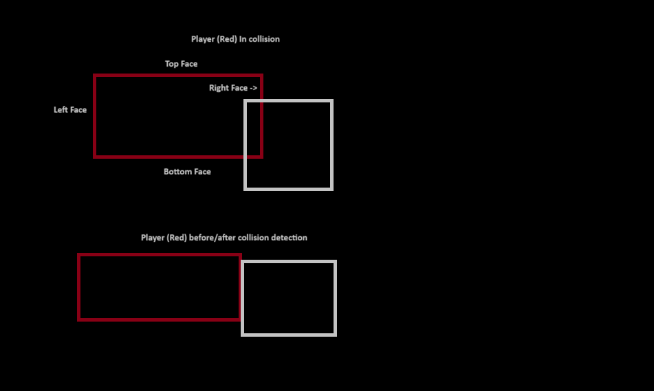

- Crafted a collision detection system that halts player movement and allows for player-specific interactions, all while managing memory and object lifecycles.
- Engineered a custom KD-Tree system to categorize and manage collision objects (static walls, interactive buttons, destructible elements) for ultra-fast spatial queries.
- Implemented an efficient culling system that queries the KD-Tree every 0.75 seconds to check for local objects that could be collided with by the player, allowing the game to reach the target 120 FPS.
About the project:
The project primarily serves as an entry point to C++ and allows me to gain a substantial amount of practice using the language and how to work around memory management and pointers. I primarily used C++ for the gameplay logic and used the SFML library to display the basic graphics. The project had 3 main challenges that I wanted to target solving as part of the project, collision detection, co-op player movement and moveable/destructable items.
Player movement:
The first major challenge was setting up the co-op player and camera system to allow both players to move as separate entities. I began by implementing a frame update loop connected to the SFML's renderer, while targeting a refresh rate of ~8.33ms (120 FPS). Giving the game a consistent refresh rate that would be enjoyable while giving me a test on whether the code I had is performant.
At startup, two player objects are instantiated, each carrying their own camera, positional data, bounding box dimensions, and velocity/acceleration values. With that I implemented an initial left-right movement by reading player keybinds — 'A' and 'D' for Player 1, the left and right arrow keys for Player 2 — and mapping input to a float, -1 (Left), 0 (No movement), 1 (Right). The value determines the direction and therefore the acceleration being applied to the player's velocity. To improve movement fluidity when reversing directions, the acceleration toward the new direction gets doubled, letting them switch directions quickly and not needing to fight momentum as much.
With basic movement in place, the next challenge was collision detection between players and walls. The core idea is to represent each object's faces as a vector of four values: left (index 0), right (1), top (2), and bottom (3). Each frame, the algorithm projects the player's end-of-frame position (Using their new speed, based on their current acceleration and start of frame speed) and checks only the relevant face based on direction of travel — leftward velocity movement checks the player's left face vs the wall right face, and vice versa. If the player's leading face hasn't crossed the wall's opposing face, the wall is immediately discarded as a non-collision, allowing for the following checks to not occur.
When a wall passes the first test, the algorithm can then check whether the player and wall overlap by checking whether the player's top or bottom face falls within the wall's vertical bounds and whether the player's checking wall hasn't passed the wall's other face. If both conditions are met, the collision is confirmed for that frame and the player's velocity is zeroed out. While the end of the frame player position is not set as the current position, any further input pushing them in that direction is suppressed until they move away.

Space Partitioning optimizations:
One optimization that proved useful to an ever so increasing amount of collision checks is the KD-Tree, a variant of a binary search tree where each node represents an object in the level that can be collided with and two child pointers. Based on how the nodes are organized by position (Either X or Y in this case, making it a 2D - Tree) it makes the tree into a space partitioning data structure which drastically helps reduce the time complexity of traversing it. The tree works by determining whether it's on an even or odd depth level. When at an even level the node compares its X position against the current node's X position, and branches left if greater than current, left otherwise. At odd levels, the Y position is used instead. This partition helps reduce collision checks from O(n) — where every object is tested against both players positions independently — down to O(log n) players doing collision checks.
I improved it even more by reducing the amount of objects that need to be checked for collisions each frame. This was done by having the player traverse the tree and check the distance to the current node and if it's close to the player then it gets included into a smaller vector (List). Then it follows the normal traveling rules of the KD tree where the distance check gets performed until the tree is fully traversed. By the end on average only 2-3 objects that the player could realistically be colliding with in the near future. At this point each player would only check their new vector to determine if they are colliding with a wall. After around 0.75 seconds a new set of vectors are calculated by the players making sure they only have the most recent nearby walls that the player could collide with. Even though the average big O notation for looping through a vector is O(n), as the amount of items is limited to only a handful of items, it turns into near O(1) time complexity.